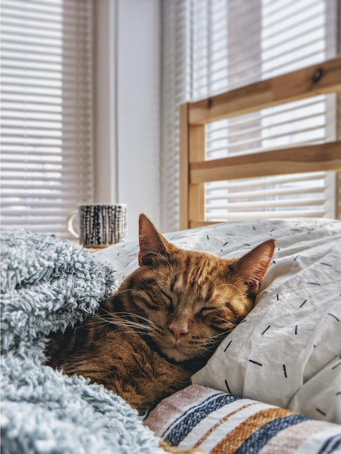

Why prefer Cats over Dogs
I chose cats are better than dogs because they are so chill and relaxed. It is very nice when they wonder around your house and they get to do whatever they want. Also they know where to use the restroom so they don't use it on your floors like your dog would
Photo by PhilCreates on Unsplash